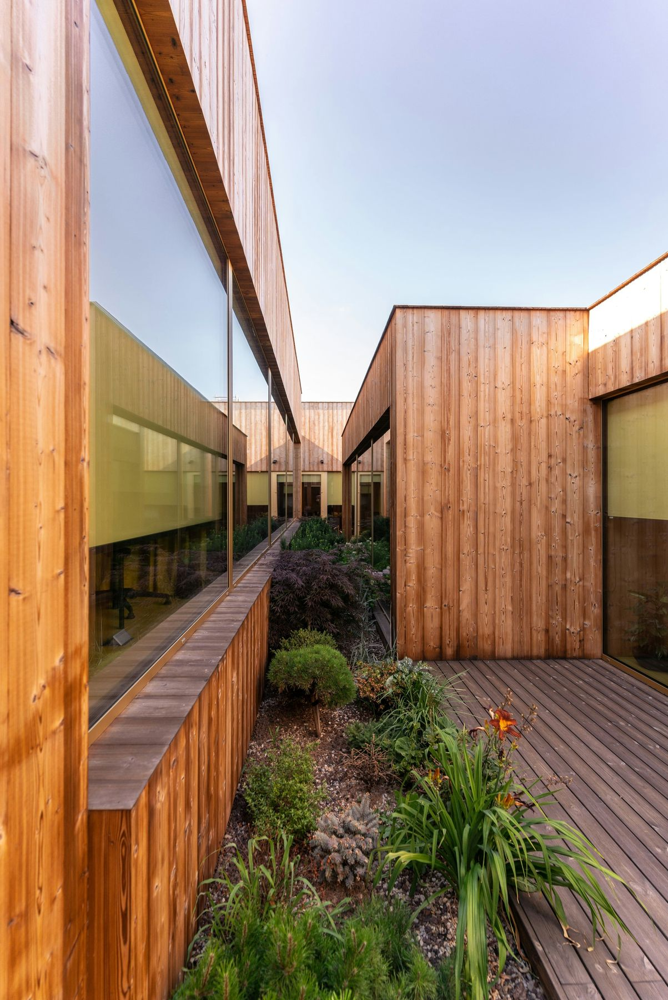
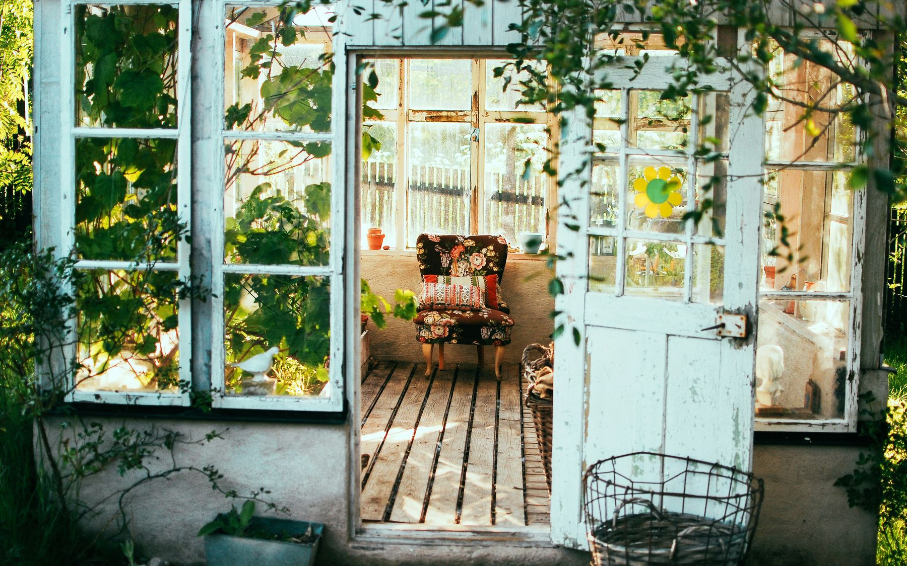
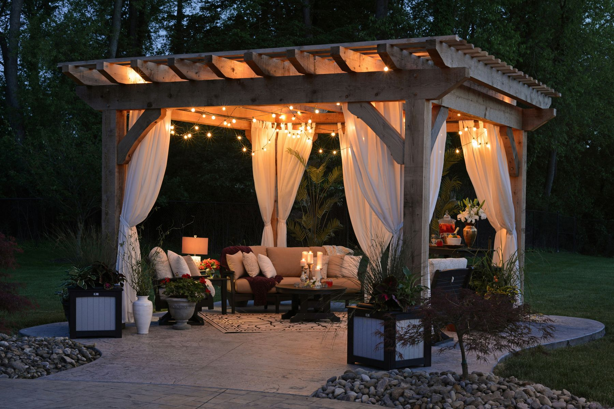

Tell us what you want. We will organise everything it takes.
One defined improvement or a connected series of works. Blossom turns the requirement into a plan, finds the right specialists and manages the project through to completion.
The project does not need to begin with a garden design.
You might want a garden office, a pergola, better lighting, a new terrace or someone to fix a project that has gone wrong. Blossom starts with the outcome, then works out the design, technical and delivery support needed to achieve it.
Useful space, properly integrated into the garden.
- Garden offices and meeting rooms
- Gyms, yoga and wellness studios
- Art, music, photography and maker studios
- Therapy and treatment rooms
- Guest rooms and annexes, subject to consent
- Summerhouses and entertainment rooms
- Workshops, potting sheds and storage buildings
- Greenhouses, glasshouses and polytunnels
- Pool houses, changing rooms and sauna buildings
- Garages, carports, bike and equipment stores
Blossom can manage feasibility, design, planning advice, supplier selection, groundworks, utilities, fit-out and the surrounding landscape.


Make the garden a place you use, not simply look at.
- Pergolas, pavilions and covered terraces
- Outdoor kitchens and barbecue stations
- Garden bars and entertaining spaces
- Dining terraces and built-in seating
- Fireplaces, firepits and heating
- Outdoor cinemas, audio and lighting
- Pools, spas, hot tubs and cold plunges
- Saunas, outdoor showers and wellness areas
- Play areas, sports courts and exercise spaces
The work beneath and around the finished garden.
- Patios, paths, steps and driveways
- Walls, retaining structures and level changes
- Fencing, gates, screens and access control
- Drainage, rainwater management and irrigation
- Garden lighting, exterior power and connectivity
- Ponds, streams, fountains and water features
- Planting, lawns, meadows, orchards and kitchen gardens
- Privacy, screening and acoustic improvements
- Security, CCTV and smart garden technology
Designed for the place rather than selected as an afterthought.
- Bespoke furniture and built-in seating
- Planters, screens and trellis
- Outdoor cabinetry and storage
- Fire features and water features
- Stone, metal and timber commissions
- Sculpture, mirrors and garden art
- Antiques, architectural salvage and reclaimed materials
- Seasonal styling and event preparation
The client-side work that turns an idea into a finished result.
You retain the important decisions. Blossom takes away the chasing, comparing, coordinating and problem solving.
Specialist work
Planning consultants, architects, structural engineers, arborists, ecologists, electricians, gas engineers and other regulated specialists are appointed when the project requires them. Blossom coordinates their contribution and keeps it connected to the wider garden.
Define the requirement and success criteria
Inspect the garden and identify constraints
Establish the likely route, budget and programme
Coordinate any design or technical advice
Source and assess suitable suppliers
Compare proposals on a consistent basis
Agree scope, responsibilities and payment stages
Coordinate access, logistics and dependencies
Monitor delivery, cost, quality and changes
Manage defects, handover, warranties and aftercare